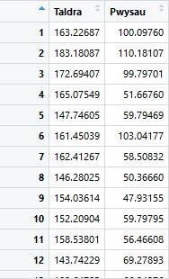
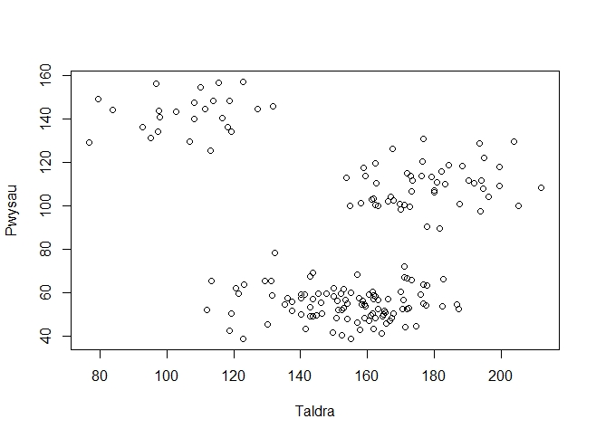
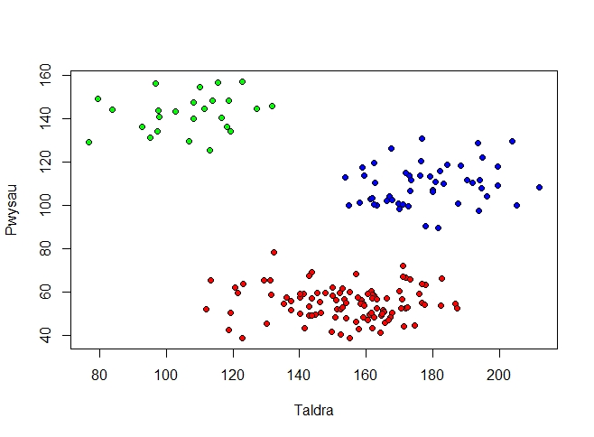
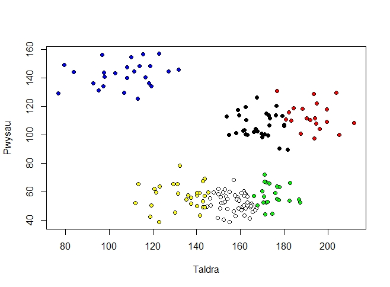

Mi fyddwn yn edrych ar ddata o daldra a phwysau 175 wahanol berson. Mi allwch chi lawrlwytho y data yma o fan hyn: https://dysgupeirianyddol.github.io/lawrlwythiadau/
Yno fydd angen lawrlwytho a gosod y pecynnau graphics, stats ag datasets ar eich cyfrifiadur. Ffordd hawdd i wirio hyn fydd i ddefnyddio’r côd canlynol:
> install.packages("graphics")
> install.packages("stats")
> install.packages("datasets")
> library(graphics)
> library(stats)
> library(datasets)
Mae’r darn gyntaf o’r côd uchod yn gosod/diweddaru’r pecynnau angenrheidiol. Mae’r ail ddarn yn llwytho’r pecynnau i ein sesiwn ni.
Nawr mi wnawn lwytho’r data.
> taldrapwysau <- read.csv("taldra-pwysau.csv")
> View(taldrapwysau)
Mae’r string sydd mewnbwn y ffwythiant read.csv yn cyfeirio at y lleoliad ar ein cyfrifiadur lle gallwn ganfod y ffeil csv priodol. Rhaid gwneud yn siŵr eich bod yn defnyddio’r lleoliad cywir i’r lleoliad o’ch ffeil chi. Ar ôl rhedeg y côd ddylai eich data edrych yn debyg i’r canlynol:
Gan fod y data hefo enwau ar gyfer y colofnau, gallwn atodi’r data i lwybr chwilio R. Bydd hyn yn gadael i ni gyfeirio at enwau colofnau’r data yn ein côd fydd yn gwneud yn lawer mwy symlach i ddeall.
> attach(taldrapwysau)
I wneud fwy o synnwyr o’r data, mi wnawn blotio’r data. Defnyddiwn pch=21 i newid y pwyntiau ar y plot i alluogi lliwiau (ar gyfer y labeli hwyrach ymlaen).
> plot(Taldra, Pwysau, pch = 21)
Sy’n rhoi:
Gwelwn fod yna tri clwstwr clir.
Rŵan rydym yn gallu tybio fod y data yn gallu cael i rannu i dri chlwstwr gwahanol, mi wnawn ddefnyddio’r algorithm dysgu peirianyddol i’w ddehongli. Rhedwn y canlynol i redeg clystyru k-cymedr yn R. Rydym yn defnyddio’r opsiwn nstart i ddewis faint o setiau ar hap o ddata wedi’i labelu wnawn gymered. Welwn enghraifft o’r set ar hap hyn yn Darlun 2.1. Rydym yn neud hyn i wneud yn fwy debygol i ni ddarganfod yr optimwm eang, mae hyn oherwydd mae yna gymaint o optima lleol.
> kcymedr <- kmeans(taldrapwysau,3, nstart = 50)
Allwn nawr adio colofn newydd i’r data sef y clystyrau newydd mae’r algorithm wedi’i darganfod.
> taldrapwysau$Clwstwr3 <- kcymedr$cluster
Gallwn weld y newid hwn gan ddefnyddio’r un côd a ddefnyddion yn gynharach.
> View(taldrapwysau)
Mae’n bosib fydd yr algorithm wedi labeli’r clystyrau gwahanol gyda rhifau gwahanol i’r hyn a welwch fan hyn, ddylai’r clystyrau ei hun fod yn hafal. Mae hyn oherwydd y setiau ar hap cychwynnol mae’r algorithm yn ei gymered i gychwyn.
Rhedwn y côd canlynol liwio’r clystyrau newydd ar graff.
> plot(Taldra, Pwysau, pch = 21, bg=c("red","green","blue")[unclass(kcymedr$cluster)])
Sy’n rhoi:
I gymharu, nawr mi nawn rhedeg yr algorithm ar gyfer 6 clwstwr i weld y clystyrau pan fydd k = 6.
> kcymedr <- kmeans(taldrapwysau,6, nstart = 50)
> taldrapwysau$Clwstwr6 <- kcymedr$cluster
> View(taldrapwysau)
Gwelwn fod y labeli newydd wedi cael ei ychwanegu i’n tabl. Yna gan blotio graff arall, fedrem weld y 6 clwstwr yn gliriach.
> lliwiau <- c("red","green","blue", "yellow", "black", "white")
> plot(Taldra, Pwysau, pch = 21, bg=lliwiau[unclass(kcymedr$cluster)])
Sy’n rhoi:
